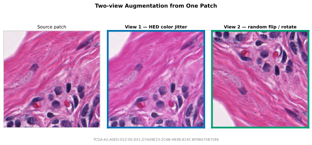
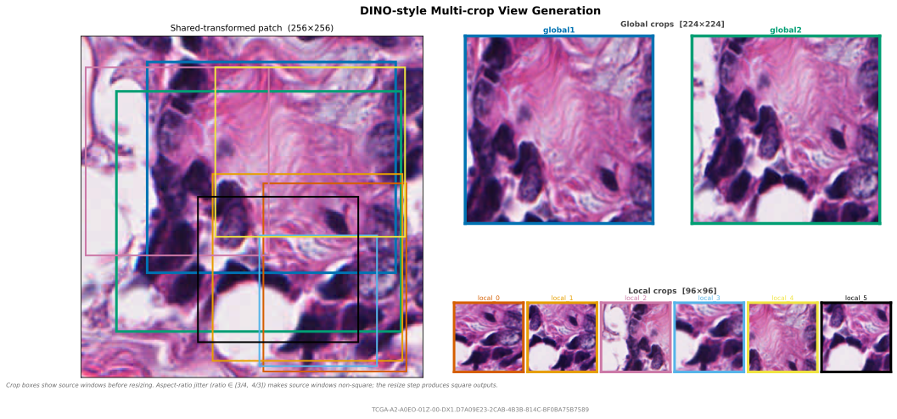

Views
Views produce multiple model inputs from one sampled tissue location. This covers two-view contrastive learning (SimCLR, BYOL, MoCo), teacher-student setups, DINO, and DINOv2-style multi-crop training.
ViewConfig
Each ViewConfig defines one named output. count repeats a view configuration with independent crop and transform draws, producing names like local_0, local_1, and so on.
| Parameter | Default | Description |
|---|---|---|
name |
— (required) | Output key in PatchResult.views or the PyTorch batch dict. Must not collide with reserved keys: image, x, y, level, patch_size, slide_path, mpp, tissue_fraction, or any SlideMetadata field. Collisions are caught at pipeline construction time. |
transforms |
None |
Per-view augmentation chain applied after optional cropping. None means the view receives the shared-transformed patch (or the raw patch if no shared_transforms) without further augmentation. |
crop |
None |
RandomResizedCrop applied before transforms. None means no spatial crop — the full patch is used. |
count |
1 |
Number of independent views generated from this config. count=1 keeps the name as-is; count > 1 produces name_0, name_1, … with independent crop and transform draws. |
mpp_override |
None |
Target MPP for a same-center slide re-read. Requires slide MPP metadata; cannot be combined with shared_transforms. |
patch_size_override |
None |
Pixels to request from the slide for an mpp_override re-read. Requires mpp_override. When None, the primary sampler's patch_size is reused. |
RandomResizedCrop
RandomResizedCrop first samples a source window from the extracted patch, then resizes that window to size x size. The extracted patch is the array produced by the sampler and slide backend before view-specific crops are applied. For example, with RandomSampler(patch_size=256, ...), the extracted patch is a 256x256 image, and all crop scales below are relative to that 256x256 image.
scale is the sampled source-window area as a fraction of the extracted patch area. For a 256x256 extracted patch, scale=(0.05, 0.4) samples crop windows between about 3277 and 26214 pixels before resizing. With the default aspect-ratio range, those windows can have different widths and heights. The model still receives fixed-size tensors because every sampled window is resized to size x size. If the sampled source window is smaller than size x size, resizing upsamples it; this is part of the standard random-resized-crop behavior used by DINO.
| Parameter | Description |
|---|---|
size |
Output side length in pixels. size=96 returns a 96×96 crop. Required. |
scale |
(min, max) range for the source-window area as a fraction of the extracted patch area. Must satisfy 0 < min <= max <= 1. Required — there is no default because the right value depends on the training recipe. Common values: DINO v1 global (0.4, 1.0), DINOv2 global (0.32, 1.0), DINO/DINOv2 local (0.05, 0.4) / (0.05, 0.32), SimCLR (0.08, 1.0). |
ratio |
(min, max) aspect-ratio range for the sampled source window. Log-uniformly sampled. Default: (3/4, 4/3) (matches torchvision). |
interpolation |
OpenCV interpolation flag for resizing. Default: cv2.INTER_LINEAR. Use cv2.INTER_AREA for downscaling, cv2.INTER_LANCZOS4 for high-quality upscaling. |
seed |
Optional seed. Default: None. Note: overridden by the pipeline's seed — set seed on PatchPipeline instead. |
Multi-view augmentation

Multi-view training reads one patch and applies N independent transform chains. shared_transforms runs once before the per-view transforms, which is useful for shared geometric changes such as flips and rotations.
from wsistream.pipeline import PatchPipeline
from wsistream.backends import OpenSlideBackend
from wsistream.sampling import RandomSampler
from wsistream.tissue import OtsuTissueDetector
from wsistream.transforms import ComposeTransforms, HEDColorAugmentation, RandomFlipRotate
from wsistream.views import ViewConfig
pipeline = PatchPipeline(
slide_paths=slide_paths,
backend=OpenSlideBackend(),
tissue_detector=OtsuTissueDetector(),
sampler=RandomSampler(patch_size=256, num_patches=-1, target_mpp=0.5),
views=[
ViewConfig(
name="view1",
transforms=ComposeTransforms([
HEDColorAugmentation(sigma=0.08), # first stochastic color view
]),
),
ViewConfig(
name="view2",
transforms=ComposeTransforms([
HEDColorAugmentation(sigma=0.08), # second stochastic color view
]),
),
],
shared_transforms=RandomFlipRotate(), # shared geometry before view-specific color
pool_size=8,
patches_per_slide=100,
cycle=True,
)
for result in pipeline:
view1 = result.views["view1"]
view2 = result.views["view2"]
DINOv2-style multi-crop for pathology

RandomResizedCrop samples a spatial crop as a fraction of the extracted patch area, then resizes it to the requested square size. This matches the crop structure used by DINO and DINOv2: large global crops and several smaller local crops.
In the standard DINO setup, the two global crops and all local crops are sampled independently from the same image passed to the augmentation pipeline. The local crops are not constrained to lie inside either global crop. DINO sends the two global crops through the teacher, and sends both global and local crops through the student. The scale ranges control how much of the extracted patch each source window covers before resizing: global crops cover a large fraction, local crops cover a smaller fraction. The official DINO implementation sets global_crops_scale=(0.4, 1.0) and local_crops_scale=(0.05, 0.4) (arguments), then uses RandomResizedCrop(224, scale=global_crops_scale) for the two global views and RandomResizedCrop(96, scale=local_crops_scale) for each local view (augmentation code).
DINOv2 exposes the same crop structure through its default SSL config: global_crops_scale=(0.32, 1.0), local_crops_scale=(0.05, 0.32), local_crops_number=8, global_crops_size=224, and local_crops_size=96 (default config). The architecture-specific ViT-L/14 and ViT-g/14 training configs override local_crops_size to 98 (ViT-L/14, ViT-g/14). The DINOv2 augmentation class applies these values through RandomResizedCrop(global_crops_size, scale=global_crops_scale) and RandomResizedCrop(local_crops_size, scale=local_crops_scale) (augmentation code).
Beyond cropping, DINOv2 applies per-view photometric augmentations with probabilities that differ across crop types (augmentation code):
| Augmentation | Global crop 1 | Global crop 2 | Local crops |
|---|---|---|---|
| Horizontal flip | p=0.5 | p=0.5 | p=0.5 |
| ColorJitter (0.4, 0.4, 0.2, 0.1) | p=0.8 | p=0.8 | p=0.8 |
| RandomGrayscale | p=0.2 | p=0.2 | p=0.2 |
| GaussianBlur (σ ∈ [0.1, 2.0]) | p=1.0 | p=0.1 | p=0.5 |
| Solarize (threshold=128) | — | p=0.2 | — |
Because the blur and solarize probabilities differ, each crop type requires its own ViewConfig; global crops cannot share count=2.
The following example adapts the DINOv2 recipe for pathology. HEDColorAugmentation replaces ColorJitter as the domain-specific stain augmentation (simulating staining variation across labs and scanners). It goes in shared_transforms so that all crops from the same tissue location share the same stain variation — the same physical tissue was stained once, so the stain profile is consistent across crops. RandomFlipRotate replaces RandomHorizontalFlip since tissue orientation is arbitrary in histology. All standard photometric augmentations (Gaussian blur, grayscale, solarization) are applied per-view via AlbumentationsWrapper.
import albumentations as A
from wsistream.backends import OpenSlideBackend
from wsistream.pipeline import PatchPipeline
from wsistream.sampling import RandomSampler
from wsistream.tissue import OtsuTissueDetector
from wsistream.transforms import (
AlbumentationsWrapper,
ComposeTransforms,
HEDColorAugmentation,
RandomFlipRotate,
)
from wsistream.views import RandomResizedCrop, ViewConfig
pipeline = PatchPipeline(
slide_paths=slide_paths,
backend=OpenSlideBackend(),
tissue_detector=OtsuTissueDetector(),
sampler=RandomSampler(patch_size=256, num_patches=-1, target_mpp=0.5),
shared_transforms=HEDColorAugmentation(sigma=0.05),
views=[
# ── Global crop 1: always blurred, no solarization ──
ViewConfig(
name="global1",
crop=RandomResizedCrop(size=224, scale=(0.32, 1.0)),
transforms=ComposeTransforms([
RandomFlipRotate(),
AlbumentationsWrapper(A.Compose([
A.ToGray(p=0.2),
A.GaussianBlur(blur_limit=(7, 23), sigma_limit=(0.1, 2.0), p=1.0),
])),
]),
),
# ── Global crop 2: rare blur, sometimes solarized ──
ViewConfig(
name="global2",
crop=RandomResizedCrop(size=224, scale=(0.32, 1.0)),
transforms=ComposeTransforms([
RandomFlipRotate(),
AlbumentationsWrapper(A.Compose([
A.ToGray(p=0.2),
A.GaussianBlur(blur_limit=(7, 23), sigma_limit=(0.1, 2.0), p=0.1),
A.Solarize(threshold_range=(128, 128), p=0.2),
])),
]),
),
# ── Local crops: moderate blur, no solarization ──
ViewConfig(
name="local",
crop=RandomResizedCrop(size=98, scale=(0.05, 0.32)),
count=8,
transforms=ComposeTransforms([
RandomFlipRotate(),
AlbumentationsWrapper(A.Compose([
A.ToGray(p=0.2),
A.GaussianBlur(blur_limit=(7, 23), sigma_limit=(0.1, 2.0), p=0.5),
])),
]),
),
],
pool_size=8,
patches_per_slide=100,
cycle=True,
seed=42,
)
This produces 10 views per patch: global1, global2, and local_0 through local_7. In the standard DINOv2 training loop, global1 and global2 are passed through the teacher (EMA) network, while all 10 views are passed through the student.
Differences from DINOv2 defaults
- Stain augmentation:
HEDColorAugmentationreplacesColorJitter. HED operates in the Hematoxylin-Eosin-DAB color space and produces more realistic staining variation for histology than generic RGB jitter. It is applied once inshared_transforms(all crops share the same stain) rather than independently per crop (as ColorJitter is in DINOv2). - Geometric augmentation:
RandomFlipRotateadds vertical flips and 90° rotations on top of horizontal flips. Tissue orientation is arbitrary in histology, so all orientations are equally valid. - No solarization on locals: Following DINOv2 defaults. Solarization is only applied to global crop 2.
- Blur kernel size:
blur_limit=(7, 23)matches the range used by DINO/DINOv2. The exact kernel size is less critical than the sigma range.
Same-location magnification views
Views can also trigger extra WSI reads at a different target MPP. The primary sampler defines the tissue location; each mpp_override view keeps the same level-0 center and reads its own patch around that center. If the requested same-center view extends beyond the slide boundary, wsistream preserves the center and lets the backend pad out-of-bounds pixels. This supports detail/context pairs such as a high-resolution cell-level view and a lower-magnification tissue-context view.
pipeline = PatchPipeline(
...,
sampler=RandomSampler(patch_size=256, target_mpp=0.5),
views=[
ViewConfig(
name="detail",
transforms=ComposeTransforms([
HEDColorAugmentation(sigma=0.05),
]),
),
ViewConfig(
name="context",
mpp_override=2.0, # read a lower-magnification context patch
patch_size_override=256, # number of pixels to request at that level
transforms=ComposeTransforms([
HEDColorAugmentation(sigma=0.05),
]),
),
],
)
mpp_override requires slide MPP metadata, like RandomSampler(target_mpp=...) and MultiMagnificationSampler.
PyTorch batches
WsiStreamDataset returns one tensor key per view, together with the same coordinate and metadata keys used by the rest of the PyTorch integration.
for batch in loader:
global0 = batch["global_0"] # (B, 3, 224, 224)
global1 = batch["global_1"] # (B, 3, 224, 224)
local0 = batch["local_0"] # (B, 3, 96, 96)
x = batch["x"]
y = batch["y"]
paths = batch["slide_path"]
Rules
transformsandviewsare mutually exclusive.viewsmust contain at least oneViewConfig.- View names must be unique after
countexpansion. - View names must not collide with reserved batch keys (
image,x,y,level,patch_size,slide_path,mpp,tissue_fraction, or anySlideMetadatafield name). Collisions are detected at pipeline construction time. shared_transformsrequiresviewsto be set (cannot be used in single-view mode).shared_transformsruns once on the primary extracted patch before per-view crop and transform processing. Every view — including those withtransforms=None— receives the shared-transformed patch. There is no per-view opt-out: if one view must skipshared_transforms(e.g. a clean teacher view in a teacher-student setup), apply the geometry transform inside each view's owntransformschain instead and omitshared_transforms.shared_transformscannot be combined withmpp_overrideviews.patch_size_overriderequiresmpp_overrideto be set.mpp_overriderequires the slide to have MPP metadata. An error is raised at extraction time if the slide lacks it.- Views with
mpp_overridere-read from the slide once and then run their own crop and transform chain for eachcountrepetition. - Seeds set on individual transforms or crops inside
ViewConfigare overridden by the pipeline's seed at construction time. UseseedonPatchPipelinefor reproducibility.